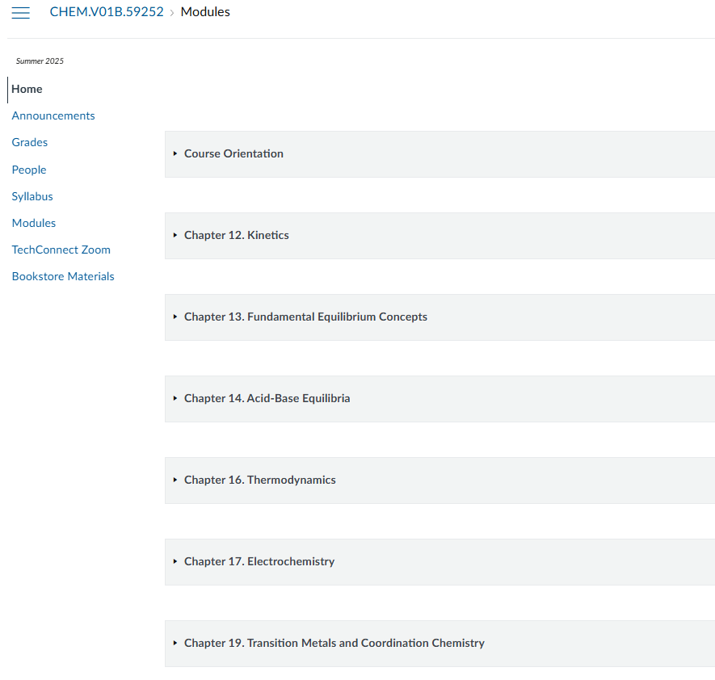
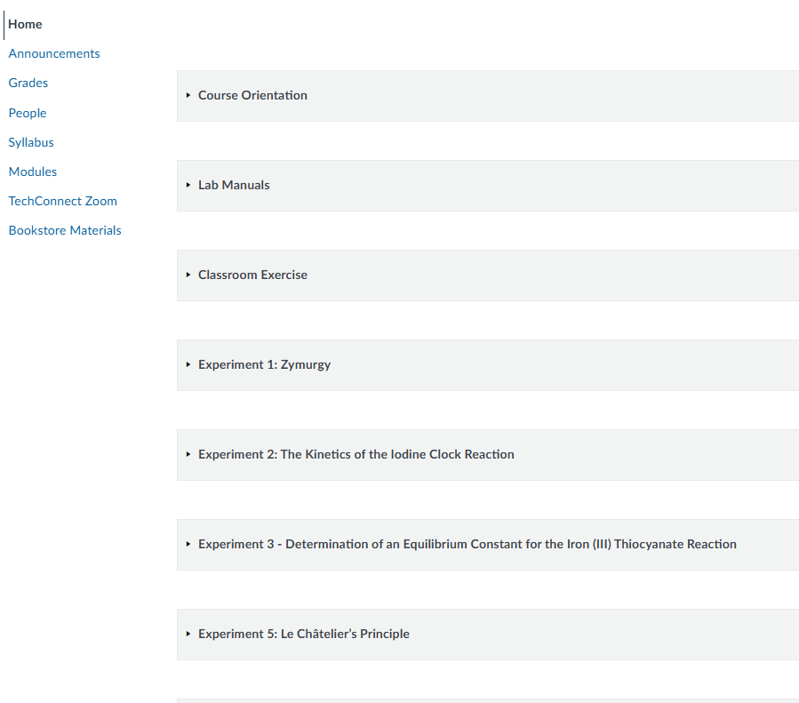
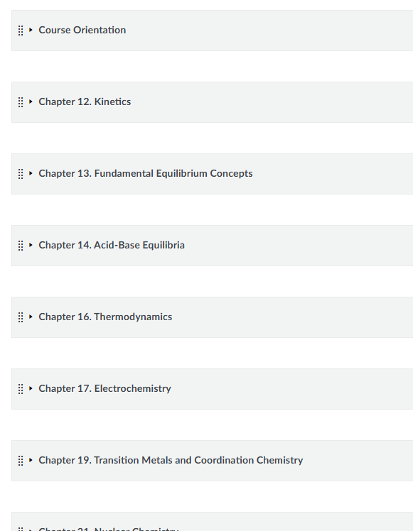
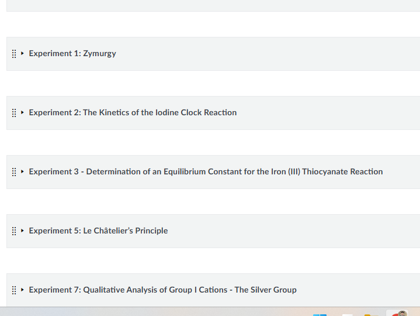
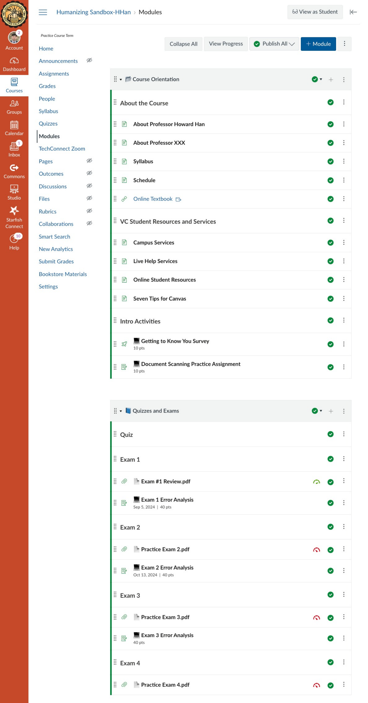
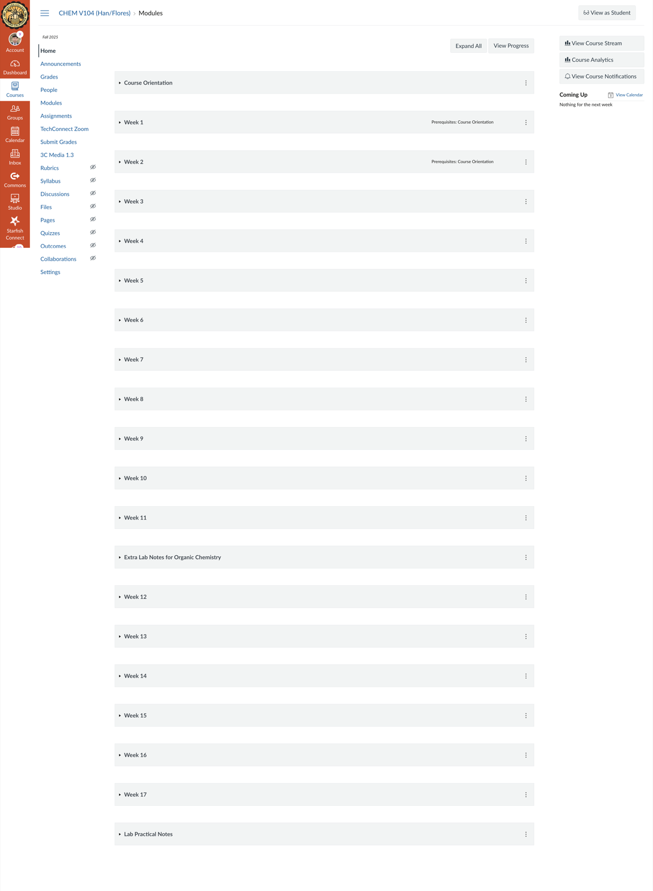
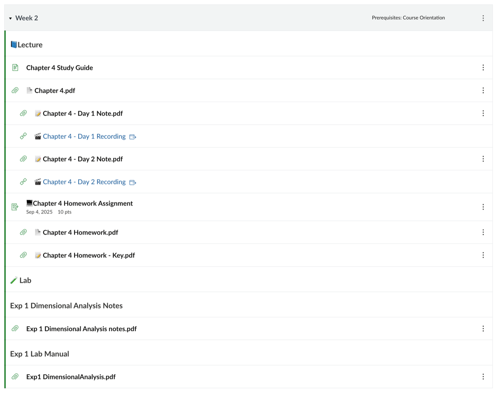
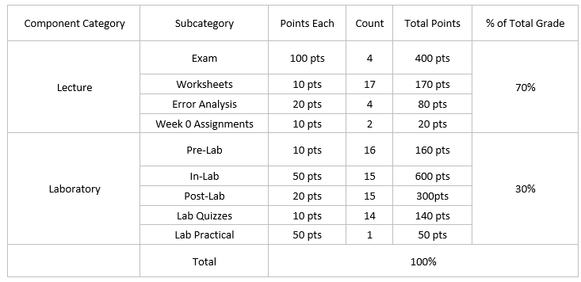

Starting in Fall 2025, lecture and lab were combined under a single CRN. A course whose lecture and
lab had different instructors now had to run out of one Canvas shell and one syllabus. I saw that as a
chance to work with the other instructors on a smooth transition. The steps are below.
That fall I taught the lecture for two linked courses. In CHEM V101 (CRN 70961) the lab was taught by
Zhibang (Jim) Duan. In CHEM V104 the two lab sections were taught by Antonia Flores (71293) and
Crystal Serrano (71290). The linked format has continued since.
Step 1 — The department meeting (April 2025)
On April 18, 2025, the chemistry department held a department meeting on how lecture and lab would be
integrated for Fall 2025 and how the shared Canvas shells would work. Two of its decisions apply to
the linked courses:
Lecture instructors would set up and maintain the shared Canvas shell. Lab instructors would be
added as co-instructors, mainly for grading and due dates.
The final grade would be split between lecture and lab by unit count rather than a fixed
percentage. For CHEM V101, a four-unit lecture with a one-unit lab, that meant 80:20.
Several questions were left open, including minimum passing grades for each component, make-up labs,
and how to grade late work.
The reasoning in the room was that other departments already weighted their labs this way. Physics
and microbiology, with one-unit labs, give the lab 20–25% of the grade. We agreed to try the unit rule
for a year and adjust it if it did not work.
Because I was teaching the lecture for both V101 and V104 that fall, I wanted the details settled
early. No weekday meeting time worked for everyone in the V101 group, so I
proposed that we agree in writing first and meet only if that failed, and I sent a draft grading
structure built on the meeting's decisions.
Step 2 — Opening the conversation with the lab instructors (July 19, 2025)
The April meeting recorded decisions, and I carried them into the July emails, the shared shells,
and the syllabi. The meeting could not say who would teach each lab. That was settled only in July, after the department hired a new full-time faculty member:
July 8 — Crystal Serrano joins the department as full-time faculty.
July 11 — the revised Fall instructor assignments go to the division office.
July 19 — I write to the lab instructors for both of my courses: Antonia and Crystal for V104,
and Jim for V101.
August 11 — the semester begins.
That left a little over three weeks to agree on grading, build shared shells, and finish syllabi, so I
wrote as soon as I knew who I would be working with.
Before writing, I pulled together the two points from the April meeting that mattered most for a
shared course, grading and the Canvas setup, so the lab instructors had something specific to respond
to. For grading I gave the one fixed rule, the lecture-to-lab ratio, and said that as long as it held,
each of us could keep teaching our part the way we already did. For Canvas I attached screenshots of my lecture and lab modules so it was clear exactly what I meant by
putting both in one shell.
Email to the V104 lab instructors (July 19, 2025)
Hello!
I just wanted to get a conversation started for the upcoming Fall semester.
I will be teaching only a lecture and Antonia will teach lab for 71293 and Crystal will teach
71290. I believe you guys are already in the corresponding Canvas Shell as well.
Grade Distribution:
For Chem 101 classes, instructors agreed to have 7:3 ratio between the lecture to lab grade. So for
example, if the lecture is total 1000 pts, lab can be roughly 450 pts. or 500 pts which makes it
33.3%
Whatever the ratio was decided for Chem v104, I will follow it.
Just in general, I think that is the only restriction. If we do 7:3 ratio, I will fit all of the
lecture materials in 1000 pts and lab can be just between 450-500 pts. I don't think what we do
doesn't really matter as long as the total points works out. So if you can maintain whatever format
or material you used to use.
Canvas:
For lecture sessions, I keep my Canvas in this format

Screenshot attached to the email: lecture modules in my Summer 2025 CHEM V01B Canvas shell, one module per chapter.
And for the lab,

Screenshot attached to the email: lab modules in the same shell, one module per experiment.
As long as we title the modules correctly, I don't see an issue with combining those into one
canvas shell.
Is there anything else we need to discuss before we officially start to set up Canvas and for
class? Please let me know.
Thank you!
Howard
Email to the V101 lab instructor (July 19, 2025)
Hello Jim!
I just wanted to start a conversation regarding the split class we have this Fall.
For V101 (70961), I am teaching lecture while you are teaching a lab. We are sharing a canvas shell.
I believe the grade distribution was decided to be 7:3 ratio between lecture and lab. Meaning, if I
make the total points of the lecture to bel 1000 pts, lab can be from 450 to 500 pts. I think that
is the only restriction we have. As long as the grade ratio is maintained, we can maintain our usual
class style.
How do you set up your canvas page? For me, I just have it like below:
Lecture:

Screenshot attached to the email: lecture modules, one per chapter.
Lab:

Screenshot attached to the email: lab modules, one per experiment.
I don't think students will be confused even if we combined both lab and lecture modules. They just
need to read the title and find the corresponding documents.
Is there anything else to be discussed? Please let me know.
Thank you!
Under the April unit rule, V101's lab would have counted for 20% of the grade. At 20%, what a
student does in lab barely moves the final grade, so I used 70:30 for my sections, and the
instructors the emails describe as agreeing to 7:3 are the lab instructors for those sections. Jim
replied that he had not planned the lab modules yet and would follow the setup.
Step 3 — Adjusting the Canvas layout together (July 26–28)
After the first emails I built a sample shell using V101, grouping modules by category (lecture, lab,
general) with an icon for each, and sent it to Antonia and Crystal.

The sample shell sent on July 26 (top of the module list): modules grouped by category, with Course Orientation and Quizzes and Exams shown here.
Crystal raised a problem I had not considered. Lecture and lab do not move in step; a lab can come a
week or two before or after the matching lecture topic, and a category archive hides that. Antonia
said she opens her lab material week by week. So we added a second layout: modules titled "Week 1,
Week 2…", with text headings separating lecture and lab inside each week. Either layout was acceptable
as long as titles and icons were consistent. Crystal also asked that the two V104 lab sections weight
their categories the same way, and we agreed.

The week-by-week layout in the Fall 2025 CHEM V104 shell (Han/Flores): Course Orientation first, then one module per week.

Week 2 opened: text headings separate lecture and lab inside the week.
Step 4 — Adjusting the syllabus together (July 22 – August 11)
The syllabus went through the same back-and-forth. I drafted a sample syllabus for the combined V104
course and sent it around. Antonia added assignment descriptions and the lab schedule, I updated both
section versions, and Crystal checked the schedule for her section. On August 11 I submitted all four
syllabi (two V101, two V104) to the division office, copying the lab instructors. Each one gives the
final grade as 70% lecture and 30% lab.

The V104 grade breakdown sent to the lab instructors on August 7: lecture categories totaling 70% and lab categories totaling 30%.
Step 5 — The semester
Once the setup was in place, the semester ran without much friction, and each of us taught our part
in our own style. I think that was mostly because the places where we might have clashed had been
handled in the system beforehand. Antonia, for example, drops the two lowest scores in her lab
categories, and I do not drop any in lecture. Because each category in Canvas carries its own weight
and its own drop rule inside the 70:30 split, both practices could sit in the same gradebook without
anyone having to give theirs up.